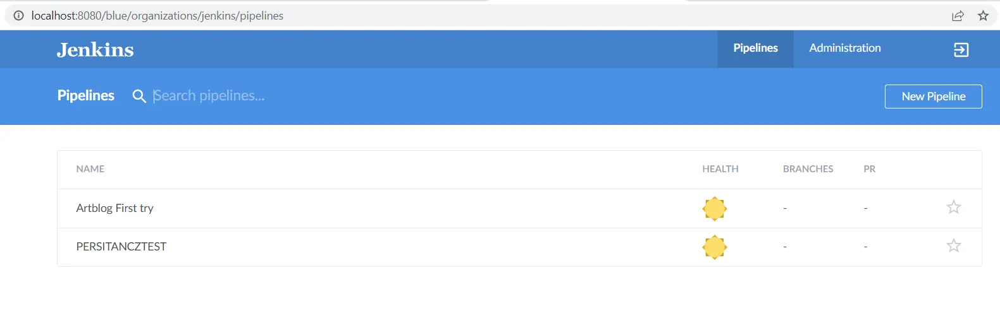
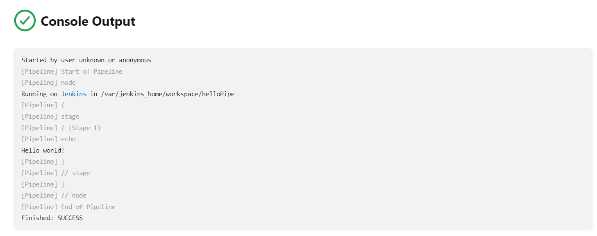
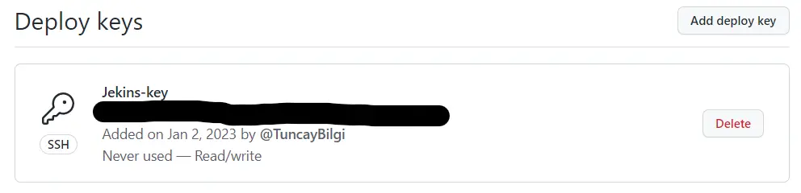

Jenkins
- MON
- 2022-2023
- temps 2
- Jenkins
- CI/CD
- Tuncay Bilgi
Résumé
Résumé
- Niveau intermédiaire
- Pré-requis nécessaires nombreux
- Installations d'outils nécessaires
Jenkins, en théorie :
Objectif :
Comprendre les besoins qui mènent à l'utilisation d'un outil comme Jenkins pour un développeur fullstack, puis mettre en place un exemple pratique d'utilisation.
Sujets abordés pendant le MON :
- Qu'est ce que Jenkins ?
- Pourquoi utiliser un tel outil ?
- Les bases
- Exemple d'utilisation concret sur un de mes projets.
C'est un MON intermédiaire : les manipulations ne sont pas compliquées mais la mise en place nécessite des bases sur de nombreux concepts différents.
Pré-requis :
Ressources utilisées :
- Documentation Jenkins (un peu dur à lire)
- Vidéo introductive sur les concepts
- Magnifique MON sur Docker
- Excellent POK de blog en React ou Incroyable POK de plagiat de la FDJ en Svelte
Continuous Delivery and Continuous Integration (CI/CD) :
Ce sont des concepts de développement qui ont plusieurs but :
- Améliorer la qualité du code
- Faciliter la vie des développeurs
- Développer du code plus rapidement
- Ajouter les dernières fonctionnalités le plus rapidement possible
Plus particulièrement, la continuous integration est l'ensemble de bonnes pratiques et d'outils qui permet de développer et tester e le code dans une version prête à être déployée le plus souvent possible. Traditionnellement, dans une équipe de développeur, la partie front et la partie Back pouvaient être développées par des personnes différentes et mises en communs quelques fois avant de lancer des tests. Cette technique est inefficace car elle laisse le temps à des bugs ou des incompatibilités de grandir sans que l'on s'en rend compte. En effet, si l'on test le système seulement une fois par mois, il est possible de se retrouver avec une version qui ne marche plus et perdre énormément de temps. Des outils comme git, github action ou Jenkins permettent aux développeurs de mettre leurs codes en communs puis de lancer une batterie de tests sur ce code plusieurs fois par jour. Grâce à cela, on évite la propagations de bugs et finalement, on gagne du temps.
Quand le code est testé est prêt à être déployé il ne reste qu'à ... le déployé!
La continuous delivery est l'ensemble d'outils et de pratiques qui permettent de déployer automatiquement la dernière version fonctionnelle du code sur le serveur de production. Cela permet d'offrir au client une version qui soit toujours fonctionnelle et qui possède les derniers ajouts, mises à jours correctives ou même mises à jour de sécurité. On peut par exemple imaginer une automatisation qui, toute les nuits, récupère toutes les fonctionnalités codées par les développeurs, les teste puis si tout fonctionne, les mets en commun dans une version à jour du code. Cette automatisation pourrait même déployer directement le code. On appelle cela un nightly build.
Par exemple ce site de M.Brucker utilise de la CI/CD :
- les élèves développent en collaboration grâce à github
- A chaque commit sur la branche principale, le code est testé par Github action
- Si les tests passent, le code est déployé sur le site github.io et la dernière version est disponible directement sans que M.Brucker ait besoin de déployer quoi que ce soit lui-même
Le problème avec cette manière de procéder est que l'on peut push un commit monstrueux qui détruit le site. Peut importe l'état des tests, le commit sera accepté et il faudra réparer le code avant de pouvoir déployer le site à nouveau.
Qu'est-ce que Jenkins?
Une vidéo explicative ici
L'idée est d'un tel outil est de mettre en place un environnement d'intégration continue. C'est à dire que le but est de créer un outil qui permet de développer, tester et pousser le code automatiquement, dès sa création. Par exemple, au lieu d'ajouter de nouvelles fonctionnalités sur notre site web, de faire un commit sur le repository, puis se rendre compte qu'il ne marche pas et corriger les bugs puis recommencer, on peut automatiser tout ça. Dans le meilleur des cas, à chaque nouvelle fonctionnalité, elle est automatiquement testée puis intégrée dans une version viable du code, prête à être déployée. Si les tests détectent des erreurs ou des incompatibilités dans le code, la nouvelle fonctionnalité n'est pas intégrée dans la branche principale et le développeur peut la retravailler sans jamais corrompre la version du code qui marche.
Des outils et des outils pour la CI
Des outils et des outils pour la CI
- Bamboo
- Buildbot
- Apache Gump (pour Java)
- Travis CI (qui fonctionne avec Github)
- Github Action
- Jenkins
Liste non exhaustive réalisée après quelques minutes sur google.
La Pipeline Jenkins :
La pipeline, ou le workflow, est l'ensemble des étapes qui gravitent autour de Jenkins et qui permettent de mettre en place l'intégration et le déploiement continue.
|Dev| => Commit -> Build -> Test -> Release -> Deploy => |Production|
Cette pipeline peut être enclenchée périodiquement comme avec un nightly build ou elle peut être enclenchée à chaque commit.
Jenkins, En pratique :
Nous allons mettre en place Jenkins avec un projet node.js, en suivant le tutoriel officiel de la doc. Le projet utilisé ne sera pas le projet de base proposé par la doc mais mon propre projet, le POK Artblog.
Lets-go
La Doc nous propose de créer une image Docker qui va servir de serveur CI, c'est à dire le serveur qui s'occupe de réaliser les tâches automatiques qu'on va mettre en place. Ici, on simule ce serveur sur notre ordinateur, en pratique ça peut être fait par un serveur dédié. Je ne recopie pas la doc ici, seulement les subtilités que je rencontres et les résultats.
Setup du conteneur Docker :
Le prérequis sur Docker rentre en jeu. Je ne sais pas a quel point c'est indispensable, mais sachez que la documentation officielle de Jenkins nous demande d'utiliser docker.
Blue Ocean n'est plus mis à jour. Le process d'installation fonctionne correctement et vous pourrez probablement utiliser le plugin à partir d'ici, mais je préfère rester sur des technologies à jour, ignorez ce qui concerne Blue Ocean si vous ne souhaitez pas l'utiliser.
Le tutoriel de Jenkins utilise Docker:dind et les Networks de Docker. Ce sont des outils qui permettent de créer plusieurs containers et de les lier entre eux. Le problème : il existe maintenant des manières plus simples. Nous avons Docker compose, qui est sensé faire la même chose mais plus simplement, j'essaie de me débrouiller avec ça. En lisant la doc je vois que j'ai besoin de 2 services :
- Jenkins
- App, service qui va lancer mon instance node
J'écris un Docker-compose.yml qui invoque ces deux types de conteneur, avec des images que j'ai récupéré sur le site officiel DockerHub Aussi, je pull les images avant de lancer le compose :
docker pull jenkins/jenkins:alpine-lts docker pull node-16alpine
J'expose les ports utilisés par les applications, et je crée un volume. Voila la tête du Docker-compose.yml :
version: '3' services: jenkins: image: jenkins/jenkins:lts ports: - "8080:8080" - "50000:50000" volumes: - jenkins_home:/var/jenkins_home environment: JAVA_OPTS: "-Djenkins.install.runSetupWizard=false"
nextjs: build: . command: npm run dev volumes: - .:/app - /app/node_modules ports: - "3000:3000" depends_on: - jenkins
volumes: jenkins_home:
Il faut alors ajouter un dockerfile qui définit le build pour next.js, cf le MON Docker. On installe BlueOcean directement dans l'instance Jenkins. La ligne sur l’environnement permet d'enlever le besoin d'avoir un mdp, cela implique bien-sûr des problèmes de sécurités.
On peut lancer le container en daemon avec dans le terminale : docker-compose up -d. Ajoutez un nom si vous voulez arrêter le container en CLI, sinon allez sur Docker desktop.
Le fait de lancer un projet dans un container peux créer des erreurs nouvelles, faites attentions. Par exemple, dans le container, je reçois une erreur de React que je n'avais pas avant.
Les mains dans Jenkins :
Blue Ocean :
Blue Ocean n'est plus mis à jour. Le process d'installation fonctionne correctement et vous pourrez probablement utiliser le plugin à partir d'ici, mais je préfère rester sur des technologies à jour, passez à la partie suivante si besoin.
Un fois sur Jenkins : On passe d'abord la langue en anglais car la traduction est désastreuse, pour cela, il faut installer le plugin Local. Ensuite, on installe le plugin Blue Ocean puis Pipeline on restart jenkins. ( C'est long ). Finalement on bascule sur Blue Ocean.
Voici le résultat :
La suite de la doc est ici.
Classic UI Pipeline :
Après avoir installé Pipeline, on à accès à ce nouveau type de workflow. On suit la doc ici.
On crée notre premiere pipeline en suivant la doc et on l'execute :
Les Jenkinsfile :
Ici je crée une Pipeline qui se connecte à mon Github et qui execute un echo hello world.
Started by user unknown or anonymous
Obtained Jenkinsfile from git https://github.com/TuncayBilgi/artblog
[Pipeline] Start of Pipeline
[Pipeline] node
Running on Jenkins in /var/jenkins_home/workspace/FirstSCMPipe
[Pipeline] {
[Pipeline] stage
[Pipeline] { (Declarative: Checkout SCM)
[Pipeline] checkout
Selected Git installation does not exist. Using Default
The recommended git tool is: NONE
No credentials specified
Cloning the remote Git repository
Cloning repository https://github.com/TuncayBilgi/artblog
> git init /var/jenkins_home/workspace/FirstSCMPipe # timeout=10
Fetching upstream changes from https://github.com/TuncayBilgi/artblog
> git --version # timeout=10
> git --version # 'git version 2.30.2'
> git fetch --tags --force --progress -- https://github.com/TuncayBilgi/artblog +refs/heads/*:refs/remotes/origin/* # timeout=10
> git config remote.origin.url https://github.com/TuncayBilgi/artblog # timeout=10
> git config --add remote.origin.fetch +refs/heads/*:refs/remotes/origin/* # timeout=10
Avoid second fetch
> git rev-parse refs/remotes/origin/dev^{commit} # timeout=10
Checking out Revision c70b1dcde19a3541436986499634cfcb416c5988 (refs/remotes/origin/dev)
> git config core.sparsecheckout # timeout=10
> git checkout -f c70b1dcde19a3541436986499634cfcb416c5988 # timeout=10
Commit message: "CI/CD init"
First time build. Skipping changelog.
[Pipeline] }
[Pipeline] // stage
[Pipeline] withEnv
[Pipeline] {
[Pipeline] stage
[Pipeline] { (Stage 1)
[Pipeline] echo
Hello world! <=== // LE HELLO WORLD EN QUESTION
[Pipeline] }
[Pipeline] // stage
[Pipeline] }
[Pipeline] // withEnv
[Pipeline] }
[Pipeline] // node
[Pipeline] End of Pipeline
Finished: SUCCESS
On peut voir que Jenkins clone ma branche dev du repo artblog Github, on voit même le dernier commit, puis il execute la pipeline.
Bravo ! A partir d'ici vous avez tout ce qu'il faut pour commencer à expérimenter sur Jenkins. La suite des opérations consiste par exemple à mettre en place de vrais pipelines, à donner une clé ssh à jenkins pour qu'il puisse commit sur les branches du repo.
Pour aller plus loin :
Nous allons mettre en place une pipeline qui effectue une action sur le repository à chaque pull-request effectuée sur le remote.
Relier Jenkins et Github par SSH :
Nous allons donner une clé de déploiement a Jenkins pour qu'il puisse déployer ou non sur le repo Github.
Pour cela on génère une paire de clé dans notre projet Artblog avec ssh keygen, on choisit un dossier, je met mes clés dans ssh/ .
Il est impératif d'inclure le dossier qui contient vos clés dans le fichier .gitignore sinon vos clés seront dévoilée publiquement et c'est un gros risque de sécurité.
Ensuite, on entre cette nouvelle clé dans le repository github en tant que clé de déploiement.
Coté Jenkins on met en place les credentials, c'est à dire notre clé privée SSH dans une pipeline qui va permettre de modifier notre Repository github.
Permettre à Jenkins de repérer des pull request :
Pour cela on installe des plugins notamment Github API qui permet de gérer des webhooks. Les webhooks sont des requêtes envoyées par Github à une adresse quand un certain évènement à lieu.
Il se trouve que ce que je veux faire n'est pas possible à moins d'avoir une adresse public à questionner. En effet le webhook de github ne peut pas trouver mon localhost:8080 où jenkins écoute les webhooks. Il faut mettre en place une interface qui transforme mon port local en public grâce à un service tier comme webhook relay, je ne le fais donc pas.
Plan de secours : Job périodique :
La méthode pour contourner le problème des webhooks est celle mise en place dans le POK CI-CD : on demande à jenkins de regarder toutes les heures le dernier commit de notre repo, si ce commit est identifié comme non-déployé on le déploie et on le met dans la base de données des commits déployés. Voir le POK en question pour plus de détails et pour une implémentation qui fonctionne.